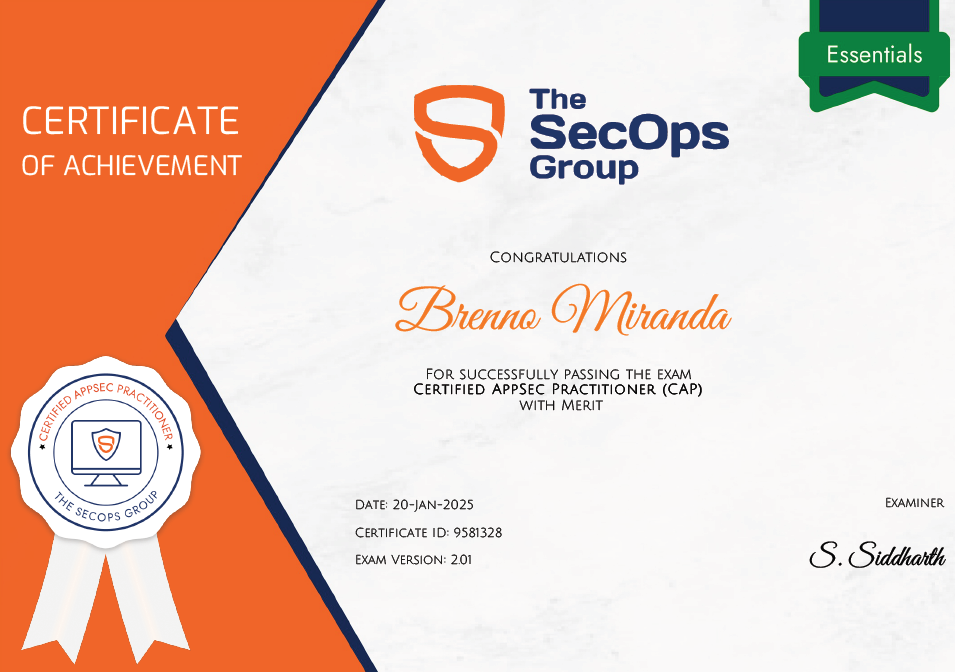

A CAP, Certified AppSec Practitioner, ofertada pela The SecOps Group, é uma certificação voltada à segurança de aplicações, com ênfase em identificação de vulnerabilidades comuns em aplicações web, práticas seguras de desenvolvimento, além de Secure Code Review.
No dia 20/01/2025, realizei a prova, sendo aprovado com méritos.

Temas cobrados
Perante o escopo da certificação, os seguintes temas são abordados:
- Input Validation Mechanisms
- Blacklisting
- Whitelisting
- Cross-Site Scripting
- SQL Injection
- XML External Entity Attack
- Cross-Site Request Forgery
- Encoding, Encryption And Hashing
- Authentication Related Vulnerabilities
- Brute force Attacks
- Password Storage and Password Policy
- Understanding Of OWASP Top 10 Vulnerabilities
- Security Best Practices And Hardening Mechanisms
- Same Origin Policy
- Security Headers
- TLS Security
- TLS Certificate Misconfiguration
- Symmetric and Asymmetric Ciphers
- Server-Side Request Forgery
- Authorization And Session Management Related Flaws
- Insecure Direct Object Reference (IDOR)
- Privilege Escalation
- Parameter Manipulation attacks
- Securing Cookies
- Insecure File Uploads
- Code Injection Vulnerabilities
- Business Logic Flaws
- Directory Traversal Vulnerabilities
- Security Misconfigurations
- Information Disclosure
- Vulnerable And Outdated Components
- Common Supply Chain Attacks And Prevention Methods
Sobre o exame
Trata-se de uma prova de múltipla-escolha de 60 questões, onde é disponbilizado 60 minutos para sua conclusão. Caso o candidato acerte mais de 60% da prova, o mesmo será aprovado, assim se certificando. Caso o mesmo acerte mais de 80% da prova, sua certificação terá o acrescimo de "with merit", evidenciando assim a alta porcentagem de acerto. A prova aborda todos os temas citados em seu escopo, tendo questões que variam entre análise de código, e descrição e resolução de problemas.Durante a prova, é requerido acesso a camera e microfone, para validação de ambiente físico e evitar ações que ferem a conduta de ética do exame.
Referências de estudo para o exame
- CAP Assistant | https://cap-assistant.ct.ws/
- Certified Appsec Practitioner (CAP) Notes | https://rkive.gitbook.io/certified-appsec-practitioner-cap
- Security on the web - Mozilla | https://developer.mozilla.org/en-US/docs/Web/Security
- Privacy on the web - Mozilla | https://developer.mozilla.org/en-US/docs/Web/Privacy
- Cabeçalhos HTTP - Mozilla | https://developer.mozilla.org/pt-BR/docs/Web/HTTP/Headers
- TOP 10 - OWASP | https://owasp.org/Top10/
- OWASP 10 - TryHackMe | https://tryhackme.com/r/room/owasptop10
- Cryptography for Dummies - TryHackMe | https://tryhackme.com/r/room/cryptographyfordummies
- HTTP in Detail - TryHackMe | https://tryhackme.com/r/room/httpindetail
- APIsec University | https://www.apisecuniversity.com/#courses
- PortSwigger Academy | https://portswigger.net/web-security/all-topics